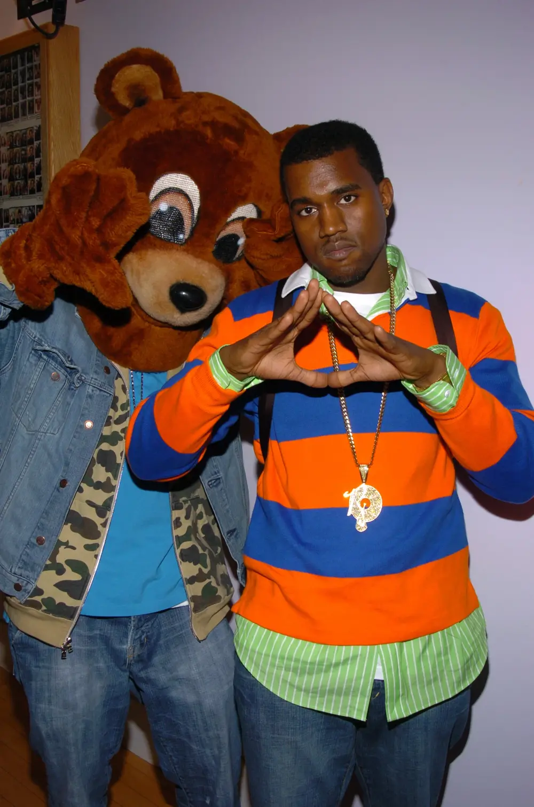

ye going through something
The Dropout Bear, designed by Sam Hansen, first appeared on the album cover for The College Dropout. He also appears on the album cover for Late Registration (2005), Late Orchestration (2006) and album art for Graduation (2007).
